DFMPro の実行後、コスト解析結果は［Cost］タブに表示されます。これは Cost Overview と Cost View. に分かれます。
Cost Overview と View のオプションは、Part と Assembly で異なります。
注記:
Cost ライセンスが利用可能な場合のみ Cost 結果が表示されます。利用できない場合は空白になります。
Cost Overview には、Raw Material Shape, Raw Material Cost、Process Cost、および Total Cost の概要値が表示されます。 Save ボタンをクリックすると、コスト結果をデータベースに保存します。
DFMPro では、コスト結果をさまざまな形式で表示できます。View グループボックスで任意の View 形式を選択します。
View 形式は 4 種類あります:
デフォルトでは、High Cost Feature の View 形式が表示されます。
High Cost Feature の View 形式では、フィーチャー単位のコスト結果が表示されます。
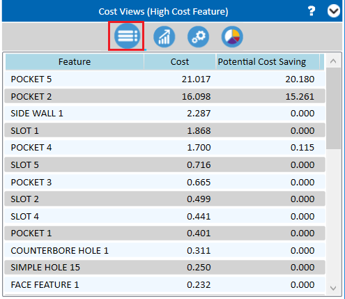
Potential Cost Saving の比較が利用可能なリスト内の任意の Feature をクリックすると、詳細なコスト比較と潜在的な削減額を表示できます。
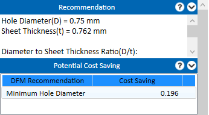
Potential Cost Saving のビューは、次のルールにのみ適用されます:
Milling
Drilling
Sheet Metal
Feature Graph の View 形式では、フィーチャー単位のコスト結果が、グラフ形式で降順に表示されます。
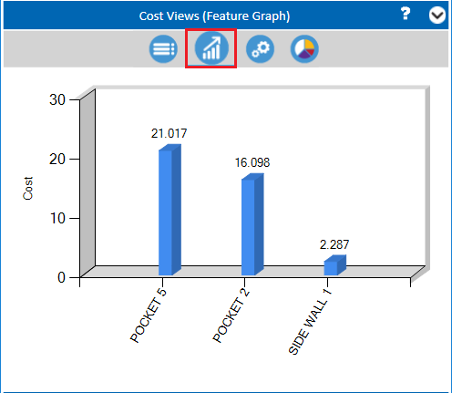
Operation Details の View 形式では、パーツの製造に必要なオペレーション数と、各工程フェーズの概算コスト見積りが表示されます。
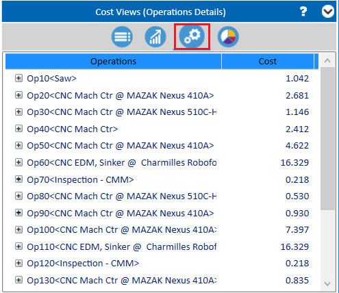
必要に応じて、DFMPro では任意のオペレーションを 追加/削除 できます。オペレーションを右クリックし、ドロップダウンメニューから Add Operation または Delete を選択します。
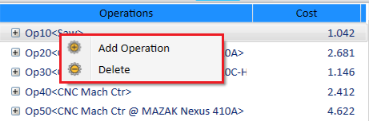
プラス記号をクリックして Operation を展開すると、オペレーションに関連する他の詳細を表示できます。
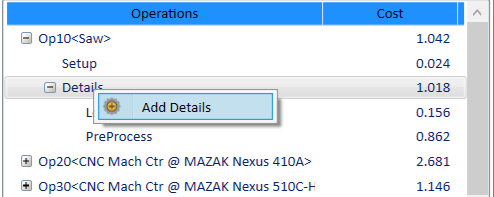
Contribution Chart の View 形式では、Raw material と Process cost の比較結果が表示されます。
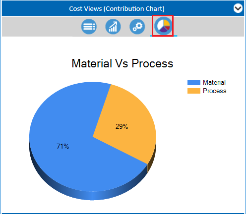
Cost indicators は 3 種類あります:
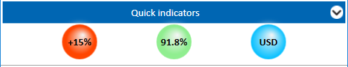
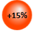
: 目標コストに対する乖離を確認するために使用します。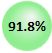
: 前回のコスト解析と比較するために使用します。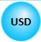
: コスト計算に使用する通貨種別を定義します。Assembly のロールアップ処理による Cost Overview 結果が表示されます。これは Part Cost、Assembly Cost、および Total Cost で構成されます。
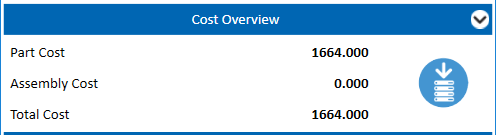
DFMPro では、コスト結果をさまざまな形式で表示できます。
Component Cost View の形式では、コンポーネント単位のコスト結果が表示されます。
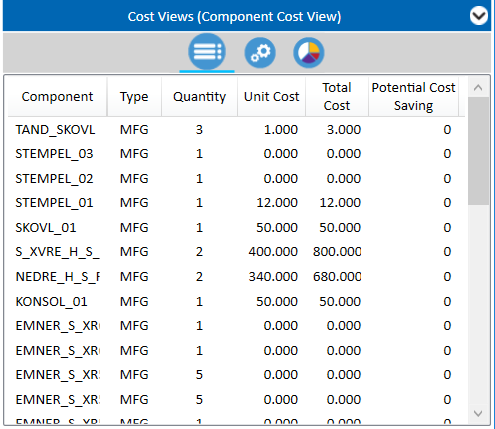
このビューでは、アセンブリの詳細なツリービューが表示され、コストの変更が可能です。
注記:
Make コンポーネントの Part Cost は GUI でのみ変更できます。
Assembly Costs はルートレベルで変更できます。
Buy コンポーネントの Part Cost はデータベースでのみ変更できます。
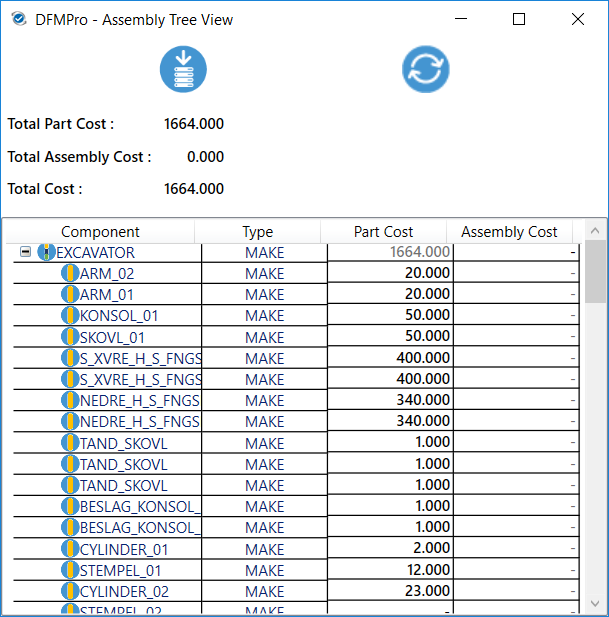
各コンポーネントのコスト寄与度とアセンブリコストの比較が表示されます。
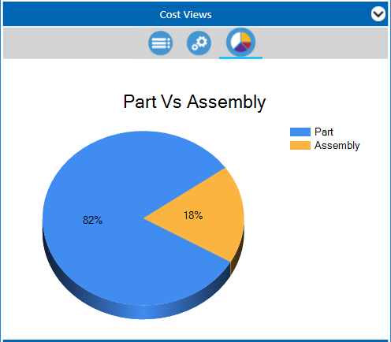